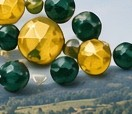

Ann Quigley
Our visit, the fourth for Tina and me, was wonderful, as usual. The beading spots were, as usual, great and I enjoyed the new places you had found for us to visit.
If you’ve been out with us before — come again. There’s always something fresh to see in the glass country around Jablonec, and plenty of familiar faces waiting.

These trips are not one-offs. Many guests return year after year; some have been more than ten times. When they ask, we take them back to old favourites — and every year we find new workshops and shops to add to the mix.



We’re a small family business, not a coach tour. You’ll meet friends from earlier trips, and evenings often mean supper together comparing finds. First-timers and return guests sit at the same table — so you can meet new people, or bring friends of your own.
You’ll get the same welcome from Prague, the same base near Jablonec, and the same patience while you browse. What changes is the mix: a new shop here, a workshop there, another corner of the glass country you haven’t seen yet.
Our visit, the fourth for Tina and me, was wonderful, as usual. The beading spots were, as usual, great and I enjoyed the new places you had found for us to visit.
My fourth trip and enjoying it as much as the first time. Thank you Keith for your endless patience whilst we browsed and thank you Simi for all your efforts behind the scenes in still finding us new and exciting shops… Looking forward to next year already.
It was fabulous as usual with new places to see and all our old favourites. This was so clever of Keith to find different glass related places as we have been so many times! … Thank you again for making it feel like home from home, see you next year hopefully!
Thank you again for the 3rd visit, here’s to the next time.
More voices — including Olive Humm (“I’m going again next year”) and Heidi Rogers (“I can’t wait to come again with my friends”) — are on our happy customers page.
If that sounds like you, we’d love to see you again. Tell us when you’re free and we’ll help you plan.
Liked what you’ve read?
See 2026 prices